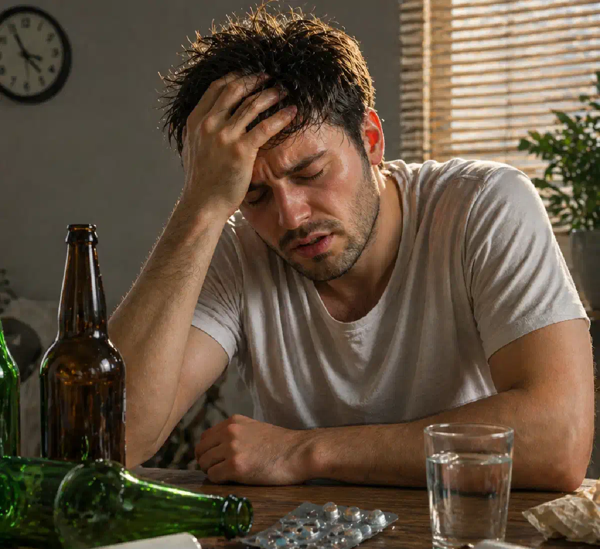

+38(068) 79 72 782
+38(068) 79 72 782Янтарна кислота, Бетаргін та Ентеросгель при алкогольної інтоксикації
Чи допомагають народні методи насправді?


Безкоштовна консультація, працюємо цілодобово 24/7
Чи допомагають народні методи насправді?

Дата написання: 25 квіт. 2026 р.
Останнє оновлення: 25 квіт. 2026 р.
Інтоксикація — це патологічний стан, при якому в організмі накопичуються токсичні речовини, що порушують роботу внутрішніх органів і життєво важливих систем. Найпоширенішими є алкогольна, харчова та медикаментозна інтоксикації, кожна з яких чинить комплексний негативний вплив на організм — від обмінних процесів до роботи нервової та серцево-судинної систем.
При розвитку інтоксикації організм відчуває значне перевантаження: порушується водно-електролітний баланс, сповільнюються процеси детоксикації, погіршується робота печінки та нирок. Це призводить до погіршення загального самопочуття, появи слабкості, нудоти, головного болю, а у більш тяжких випадках — до порушення свідомості та роботи серця.
Прагнучи полегшити стан, багато людей вдаються до самостійного лікування, використовуючи доступні аптечні засоби — бурштинову кислоту, Бетаргін і Ентеросгель. Ці препарати справді можуть мати допоміжну дію при легких формах інтоксикації. Однак виникає закономірне питання: чи здатні такі методи ефективно впоратися з вираженим отруєнням і замінити повноцінну медичну допомогу?
При потраплянні токсинів в організм запускаються складні процеси їх нейтралізації та виведення, однак можливості цих механізмів обмежені. Основне навантаження беруть на себе печінка, нирки та нервова система, які змушені працювати в посиленому режимі. Печінка переробляє токсичні речовини, нирки виводять продукти їх розпаду, а нервова система першою реагує на зміни внутрішнього середовища організму. У результаті відбувається перевантаження цих систем, що призводить до зниження їх ефективності та погіршення загального стану.
На тлі інтоксикації порушується водно-електролітний баланс, розвивається зневоднення, страждає обмін речовин. Погіршується робота серцево-судинної системи — можливі стрибки артеріального тиску, прискорене серцебиття, відчуття перебоїв у роботі серця. Одночасно знижується активність головного мозку: погіршується концентрація, з’являється слабкість, загальмованість або, навпаки, підвищена тривожність і дратівливість.
Особливу небезпеку становить алкогольна інтоксикація. Етанол в організмі перетворюється на токсичні метаболіти, зокрема ацетальдегід, які чинять виражену пошкоджувальну дію на клітини. Це призводить до порушення роботи печінки, посилення токсичного навантаження на організм і погіршення самопочуття. На цьому тлі з’являються характерні симптоми — нудота, блювання, головний біль, запаморочення, слабкість, а у більш тяжких випадках можливі сплутаність свідомості, порушення координації, різкі перепади тиску та серйозні збої в роботі серця. При виражених симптомах важливо не зволікати зі зверненням до лікаря, особливо якщо потрібне лікування інтоксикації в Києві або термінова детоксикація під медичним контролем.
Популярність домашніх засобів пояснюється їх доступністю та простотою застосування. Такі препарати можна придбати без рецепта, використовувати у звичних домашніх умовах і не витрачати час на звернення до лікаря. Для багатьох це виглядає як швидкий і зручний спосіб полегшити стан без зайвих витрат і стресу.
Крім того, частина цих засобів справді має певний ефект при легких формах інтоксикації. Вони можуть трохи покращувати самопочуття, знижувати вираженість симптомів, підтримувати обмінні процеси або сприяти виведенню частини токсинів. Саме цей позитивний досвід формує у людей упевненість у їхній ефективності.
Однак тут виникає ключова проблема — створюється ілюзія універсальності таких методів. Покращення при легкому стані сприймається як доказ того, що ці засоби допоможуть і при більш серйозній інтоксикації. На практиці це не так: при вираженому отруєнні можливостей домашніх препаратів недостатньо, а відсутність своєчасної медичної допомоги може призвести до погіршення стану та розвитку ускладнень.
Бурштинова кислота бере участь в енергетичному обміні на клітинному рівні та відіграє важливу роль у процесах вироблення енергії. Завдяки цьому вона може частково покращувати клітинне дихання і підтримувати метаболічні процеси, особливо в умовах підвищеного навантаження на організм. При легкій інтоксикації її застосування може сприяти швидшому відновленню, зниженню відчуття втоми, покращенню загального самопочуття та підвищенню працездатності.
Додатково бурштинова кислота може мати помірну стимулювальну дію, допомагаючи організму швидше адаптуватися після токсичного впливу. У деяких випадках відзначається зменшення слабкості, підвищення тонусу та незначне покращення когнітивних функцій, таких як концентрація і ясність мислення.
Однак важливо розуміти, що її можливості обмежені. Бурштинова кислота не зв’язує і не виводить токсичні речовини з організму, не знижує їх концентрацію в крові та не усуває причину інтоксикації. Вона не має прямого впливу на процеси детоксикації, які виконують печінка та нирки, і не здатна компенсувати їх перевантаження при серйозному отруєнні.
Бетаргін містить амінокислоти та компоненти, які підтримують роботу печінки й беруть участь у метаболічних процесах. Він може сприяти покращенню обміну речовин, частково знижувати токсичне навантаження на печінку та підтримувати її функції після вживання алкоголю. Завдяки цьому при легкому похміллі або початковій стадії інтоксикації засіб може допомогти зменшити слабкість, покращити загальне самопочуття та прискорити відновні процеси.
Додатково Бетаргін може мати помірний гепатопротекторний ефект, підтримуючи клітини печінки в умовах підвищеного навантаження. Це особливо актуально при епізодичному вживанні алкоголю, коли потрібна м’яка підтримка організму без виражених порушень.
Однак важливо розуміти, що його дія обмежена. При вираженій інтоксикації або тривалому вживанні алкоголю можливостей препарату недостатньо. Він не здатний швидко й ефективно вивести токсичні речовини з організму, не усуває їх циркуляцію в крові та не забезпечує повноцінну детоксикацію. Бетаргін може використовуватися як допоміжний засіб при легких станах або на етапі відновлення, але не може замінити медичну допомогу при серйозному отруєнні.
Ентеросгель — це ентеросорбент, який зв’язує токсичні речовини в просвіті шлунково-кишкового тракту та сприяє їх виведенню з організму. Він діє локально, не всмоктуючись у кров, і може ефективно зменшувати токсичне навантаження, особливо при харчових отруєннях, кишкових інфекціях і потраплянні шкідливих речовин у ШКТ.
На ранніх етапах інтоксикації його застосування справді може допомогти знизити вираженість симптомів і полегшити загальний стан. Ентеросгель може зменшувати подразнення слизової оболонки шлунка та кишечника, знижувати прояви нудоти й дискомфорту, а також запобігати подальшому всмоктуванню частини токсинів, якщо вони ще перебувають у травному тракті. Це робить його корисним засобом першої допомоги при легких формах отруєння.
Однак при алкогольній інтоксикації його ефективність суттєво обмежена. Основна частина етанолу та його токсичних метаболітів швидко всмоктується в кров і циркулює в організмі, чинячи системний вплив на органи й тканини. У цій фазі сорбенти вже не здатні вплинути на рівень токсинів, оскільки діють лише в кишечнику.
Бурштинова кислота, Бетаргін і Ентеросгель можуть бути корисними при легкій інтоксикації, коли симптоми виражені слабо і відсутні серйозні порушення з боку внутрішніх органів. У таких випадках вони здатні частково підтримати організм, знизити вираженість неприємних відчуттів і сприяти швидшому відновленню.
Кожен із цих засобів виконує свою обмежену функцію: бурштинова кислота підтримує енергетичний обмін, Бетаргін допомагає печінці, а Ентеросгель зв’язує частину токсинів у шлунково-кишковому тракті. У комплексі вони можуть дати помірний ефект при незначному токсичному впливі, особливо на ранніх етапах. Однак важливо розуміти, що їхні можливості обмежені. Ці засоби не впливають системно, не здатні швидко знизити концентрацію токсинів у крові та не усувають серйозні порушення, що виникають при вираженій інтоксикації.
При середній і тяжкій інтоксикації організм уже не здатний самостійно впоратися з токсичним навантаженням. Різко зростає навантаження на печінку, нирки, серцево-судинну та нервову системи, що призводить до погіршення загального стану і прогресування симптомів. З’являється виражена слабкість, багаторазове блювання, прискорене серцебиття, стрибки артеріального тиску, тривожність, а в деяких випадках — сплутаність свідомості та дезорієнтація.
На цьому етапі порушуються ключові процеси регуляції: страждає водно-електролітний баланс, посилюється зневоднення, погіршується робота мозку та серця. Організм втрачає здатність ефективно виводити токсини, а їх концентрація продовжує зростати, погіршуючи стан. У таких випадках домашні методи виявляються недостатніми, а пацієнту може знадобитися повноцінна медична допомога, наприклад крапельниця при інтоксикації в Одесі з індивідуально підібраною схемою відновлення.
Самолікування при інтоксикації може призвести до значного погіршення стану та розвитку тяжких ускладнень, особливо якщо йдеться про середній або виражений ступінь отруєння. Без медичного контролю неможливо об’єктивно оцінити ступінь інтоксикації, рівень токсичного навантаження на організм і ступінь ураження внутрішніх органів. У результаті людина може недооцінити серйозність ситуації, продовжувати використовувати неефективні засоби та втрачати дорогоцінний час.
За відсутності кваліфікованої допомоги токсини продовжують циркулювати в організмі, чинячи негативний вплив на життєво важливі системи. Посилюється навантаження на серце, що може призводити до порушень ритму та стрибків артеріального тиску. Страждає нервова система — з’являються тривожність, дратівливість, сплутаність свідомості. Одночасно погіршується робота печінки та нирок, які відповідають за виведення токсинів, що додатково сповільнює процеси детоксикації.
Небезпеку становить порушення водно-електролітного балансу та зневоднення, які часто супроводжують інтоксикацію. Це може призвести до погіршення роботи серця, зниження тиску, слабкості й навіть втрати свідомості. Без правильної медичної корекції такі стани можуть прогресувати. Особливо небезпечні ситуації, при яких спостерігаються виражені симптоми: порушення свідомості, дезорієнтація, судомні напади, біль у ділянці серця, сильна тахікардія або різкі перепади тиску.
Інфузійна терапія є найбільш ефективним методом лікування вираженої інтоксикації, оскільки дозволяє впливати на організм системно і в короткі терміни. Внутрішньовенне введення розчинів забезпечує їх швидке надходження в кровотік, що особливо важливо при станах, які потребують негайної стабілізації. Крапельниці сприяють прискореному виведенню токсичних речовин, відновленню водно-електролітного балансу та усуненню зневоднення, яке часто супроводжує інтоксикацію. Одночасно підтримується робота життєво важливих органів — серця, печінки, нирок і нервової системи. До складу інфузійної терапії можуть входити розчини для детоксикації, вітаміни, препарати для стабілізації тиску та покращення загального стану пацієнта.
Якщо стан пов’язаний із тривалим вживанням алкоголю, запоєм або вираженим похмільним синдромом, може знадобитися крапельниця від алкоголю в Харкові з індивідуально підібраним складом препаратів. Такий підхід допомагає не просто тимчасово полегшити симптоми, а комплексно підтримати організм у період токсичного навантаження. Додатковою перевагою є можливість індивідуального підбору складу та об’єму терапії залежно від тяжкості стану. Це дозволяє не лише усунути симптоми, а й впливати на причини інтоксикації, знижуючи ризики ускладнень. На відміну від домашніх засобів, які діють обмежено й локально, інфузійна терапія має комплексний вплив на організм.
Звернення до лікаря необхідне при появі виражених симптомів інтоксикації, оскільки вони вказують на значне навантаження на організм і можливі порушення роботи життєво важливих систем. До таких ознак належать сильна слабкість, багаторазове блювання, неможливість утримувати рідину, порушення свідомості, сплутаність, прискорене серцебиття, перебої в роботі серця або різкі стрибки артеріального тиску. Ці стани потребують професійної оцінки та своєчасної медичної допомоги. Особливу увагу слід приділяти ситуаціям, коли симптоми не зменшуються або, навпаки, посилюються з часом. Якщо на тлі домашнього лікування зберігається погіршення самопочуття, наростає слабкість, з’являється тривожність, запаморочення або інші тривожні ознаки — це сигнал про те, що організм не справляється самостійно і необхідна допомога спеціаліста.
Також медична допомога обов’язкова при тривалому вживанні алкоголю, особливо якщо йдеться про запійні стани. У таких випадках інтоксикація має більш тяжкий і затяжний характер, супроводжується виснаженням організму та порушенням роботи внутрішніх органів. Самостійне лікування тут не лише неефективне, а й може бути небезпечним.
При запійних станах, вираженій слабкості, порушенні сну, тривожності та неможливості самостійно припинити вживання може знадобитися виведення із запою в Дніпрі під контролем нарколога. Це дозволяє швидко оцінити стан пацієнта, провести необхідну діагностику, підібрати ефективну терапію та запобігти розвитку ускладнень. Якщо інтоксикація супроводжується блюванням, тремором, стрибками тиску, прискореним серцебиттям або вираженим виснаженням, може бути показана детоксикація від алкоголю в Запоріжжі. Медичний підхід значно підвищує безпеку лікування та прискорює процес відновлення організму.
Ефективне лікування інтоксикації потребує комплексного підходу, оскільки токсичний вплив зачіпає одразу кілька систем організму. Важливо не лише вивести шкідливі речовини, а й відновити нормальну роботу внутрішніх органів, стабілізувати обмінні процеси, підтримати серцево-судинну та нервову систему. Тільки за такого підходу можна досягти стійкого покращення стану та запобігти розвитку ускладнень.
Медична допомога дозволяє швидко й безпечно стабілізувати стан пацієнта. Застосовуються методи, спрямовані на детоксикацію, відновлення водно-електролітного балансу, нормалізацію тиску, покращення роботи печінки та нирок. Такий формат лікування підбирається індивідуально і враховує ступінь інтоксикації, загальний стан організму та наявність супутніх порушень.
При хронічному алкогольному навантаженні важливо не лише зняти гострий стан, а й перейти до подальшого лікування залежності. У таких випадках може знадобитися лікування алкогольної інтоксикації у Львові з подальшою консультацією нарколога та підбором подальшого плану відновлення.
Домашні засоби, такі як бурштинова кислота, Бетаргін або сорбенти, можуть використовуватися лише як допоміжний захід при легких станах або на етапі відновлення. Вони не здатні забезпечити повноцінне очищення організму і не замінюють професійну медичну допомогу при вираженій інтоксикації.
Якщо домашні методи не допомагають, симптоми посилюються або стан викликає тривогу, краще не ризикувати і звернутися по професійну допомогу. У таких випадках доступна наркологічна допомога в Черкасах, що включає огляд лікаря, детоксикацію та рекомендації щодо подальшого відновлення.

Статтю перевірено експертом
Могучев Станіслав
Лікар-терапевт, ординатор
Можливо цікава стаття:
Янтарна кислота, Бетаргін та Ентеросгель при алкогольної інтоксикації

Так, ми суворо дотримуємося повної конфіденційності на всіх етапах лікування. Інформація про пацієнта, діагноз та проходження терапії не передається третім особам. Звернення до нас не тягне за собою постановку на облік. Ви можете бути впевнені у безпеці та анонімності.
Програма лікування розробляється індивідуально після консультації з фахівцем. Враховуються вид залежності, її тривалість, фізичний та психологічний стан пацієнта. Такий підхід дозволяє підвищити ефективність терапії та знизити ризик зриву. Ми не використовуємо шаблонні рішення.
Так, ми супроводжуємо пацієнтів і після основного курсу лікування. Проводяться консультації, рекомендації щодо адаптації та профілактики рецидивів. За потреби можлива подальша психологічна підтримка. Це допомагає зберегти результат та повернутися до повноцінного життя.
Номер телефону:
+380 (68) 797 27 82
+380 (50) 021 69 57
Адресу наркологічного центра вашого міста уточнюйте за
телефоном
Працюємо: Київ, Одеса, Львів, Харків, Дніпро, Запоріжжя,
Черкасах, Чугуєві, Чорноморську, Кам'янському
Telegram: t.me/umbrellaplus
Графік работы: Цілодобово